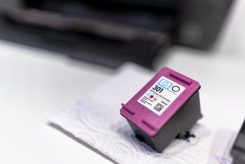

Printer & Office
My printer is printing strange symbols instead of text
Your printouts are gibberish — random symbols, garbage characters, endless lines of nonsense instead of your document.

Your prints come out pale and washed out — text so light it strains the eyes, colors barely visible. Light prints point to three causes: economy mode secretly on, fading ink, or clogged heads (inkjet) / low toner (laser). The mode setting surprises everyone — printers turn it on silently to "save ink".
Prints that went faint AFTER a cartridge swap may have a protective tape/cover left on the new cartridge — the classic. Pull it back out and look.
Your printouts are gibberish — random symbols, garbage characters, endless lines of nonsense instead of your document.
Your inkjet prints have missing lines, banding, or colors that drop out — the classic clogged print head.
You have one printer and several computers, and you want them all printing without buying anything.